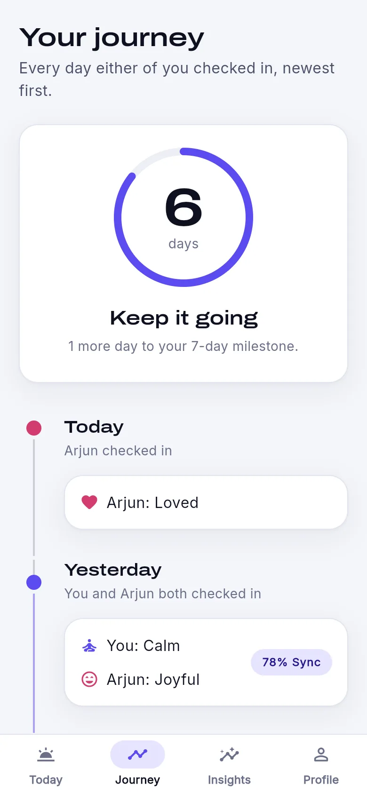
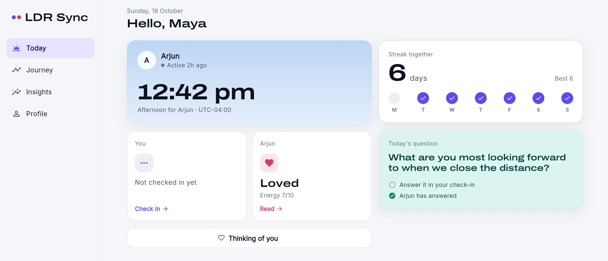

You
--:--
For couples in different time zones
LDR Sync is a small daily ritual for long-distance couples. Each of you shares how the day really went (a mood, your energy, one honest line), and it lands on the other person's screen the moment you send it.
Free. Runs in the browser on your phone, tablet or computer.
That's the whole problem with long distance. You finish your day just as theirs gets busy, and "how was your day?" turns into a message that sits unread for hours. A check-in is built to wait for them.
You
--:--
--:--
Setup takes two minutes. After that it's one minute a day.
Sign up and you get an 8-character invite code. Send it to your partner however you usually talk.
Pick a mood, slide your energy from "running on empty" to "buzzing", and add a line if you want to.
Their check-in appears on your dashboard live, next to their local time and the colour of their sky.
Your journey
Every day either of you checks in counts. The Journey tab keeps the whole history, day by day, with a sync score for how closely your energy matched. Missing a day breaks the streak, which is kind of the point.

A small prompt to answer in your check-in, so there's something to talk about that isn't logistics.
One tap sends a nudge that pops up on their screen. There's a one-minute cooldown, so it stays sweet.
See when your partner has the app open, or how long ago they last did, before you send anything.
One check-in per person per day. Change your mind about the mood and you can update it until the day rolls over.
Phone, tablet, laptop
On a phone it's a single column you can use with one thumb. On an iPad or a laptop the same dashboard spreads into two columns with a sidebar, so it's comfortable to leave open on your desk.

Every check-in belongs to your shared space, and the database itself refuses to show it to anyone outside that space. That's enforced with row-level security in Postgres, not just hidden by the app.
No ads, no public profiles, no feed of other couples. Just your days and theirs.
Yes. You each sign up with your own email. One of you starts the space and shares the code, and the other enters it.
No problem. Either of you can enter the other's code from the invite screen. Your empty space is cleaned up automatically.
Not from an app store yet. It runs in your browser, and on a phone you can add it to your home screen from the share menu so it opens like an app.
Nothing. There's no paid plan.
Days are counted in UTC, so the two of you always agree on which day a check-in belongs to, even twelve time zones apart.